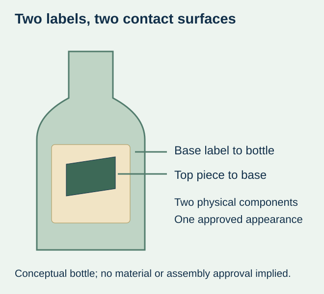
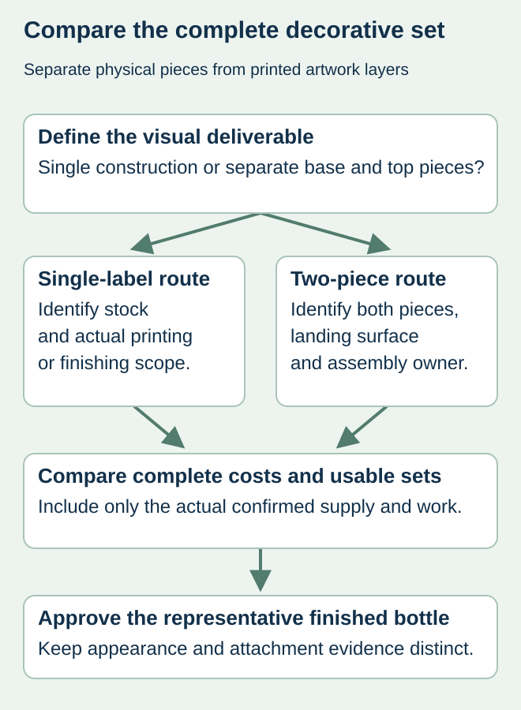

A wine-label mockup shows a small dark crest layered over a larger textured panel. One quote covers only the large panel; another includes two printed pieces but says nothing about applying the smaller one. The prices do not yet describe the same finished bottle.
Specify a physical label-on-label design as a complete base-and-top-component set, including the intended assembly route. Then compare it with a supported single-label design that meets the visual brief. Two separately applied pieces are not the same deliverable as two artwork layers or two finishing passes on one label.


Confirm what creates the layered appearance
Ask whether the effect comes from print, foil or relief on one construction, or from a separate physical label applied over another. A shaded digital mockup cannot settle that distinction. Mark both cut shapes and the assembled position, including any area of the base intended to remain visible.
The published GINnasium design study shared by project partner Vetroelite lists label-on-label application using two different papers among its techniques. That is an external design reference, not a ZFU customer example, a claim for the illustrated brand or evidence that an arbitrary material pair will work. This guide makes no sales-lift claim from that study.
Compare the complete deliverable
| Question | Two physical decorative labels | Single-label alternative |
|---|---|---|
| What is ordered? | Identified base and top pieces with their own dimensions and constructions | One construction and the actual proposed printing/finishing scope |
| What is applied? | A defined base/top assembly route, including who performs it | One label applied to the bottle |
| What touches adhesive? | Bottle under the base; actual base finish under the top piece | Bottle under the main label, plus any designed overlap |
| What quantity is usable? | Complete matched sets after the agreed reserves and losses | Accepted labels for the required finished bottles |
| What sample is relevant? | Assembled pair with the proposed base surface and top adhesive | Representative finished single-label construction |
A single label may simplify assembly when it achieves the required visual result and is supported by the proposal. Two pieces may be appropriate when the distinct physical layers are important to the design and the relevant assembly evidence is available. Neither is automatically cheaper, more durable or more premium; compare the actual offer and finished sample.


Identify the top piece’s real landing surface
The base label bonds to the bottle. The top piece may bond to printed paper, varnish, laminate, foil or another supplied finish. Evidence for the first interface does not automatically approve the second. Mark where the top adhesive lands and ask the supplier to identify that region of the actual base construction.
This is a related material question to the printed-face overlap interface, but the purchase includes a separate component and assembly operation rather than one label’s trailing edge. A blank base sample cannot represent a coated landing zone it does not carry. If the top piece crosses a change in surface, identify that feature rather than assume the whole visible panel behaves alike.
Ask the responsible parties to agree the representative evaluation, including actual bottle shape, base finish, top construction, application sequence and relevant handling. Record substitutions and unresolved conditions. No adhesive grade, dwell time, placement tolerance or wet-use result is specified here.
Make assembly and quantities explicit in the quote
Determine whether the supplier proposes separately supplied components or an assembled deliverable, and confirm feasibility before treating either as available. If the packer applies two pieces, identify the actual handling and placement work. A quote for loose printed components does not include that work simply because the PDF shows a finished bottle.
For an arithmetic illustration only, 1,000 accepted base labels and 900 accepted matching top pieces allow at most 900 complete two-piece sets before any further losses. The example is not an order quantity, production yield or recommended reserve. Use the actual component quantities and agreed allowances, and do not count an unmatched base as a finished decorative set.
Where a top piece is shared across vintages but the base changes, confirm the authorized pairing and remaining usable stock. A shared visual element does not make every component revision interchangeable. The component-set guide provides the related identity record; the layered design also needs the correct physical landing surface and assembly arrangement.
Approve the assembled result before extending the order
Review both component identities and the complete appearance on the actual bottle. Keep decorative alignment, physical attachment and later handling as separate observations. A misplaced top piece is not necessarily a foil-to-print error on the base. Use the decoration-registration guide when the disputed features are finishing layers on the same label.
If the proposed assembly lacks representative evidence or an available supply route, keep it provisional and compare a confirmed alternative. Reordering should preserve both component revisions and the approved assembly scope. This site does not promise a particular multilayer converting process, automatic assembly service or decorative performance without project confirmation.
Discuss the unresolved label requirement
Send the actual bottle, both cut shapes and sizes, the assembled layout, proposed base stock/finish, quantities per component, application arrangement and intended use. Ask which single- or two-component route can be confirmed for the project. Review the wine-label product scope and prepare a label specification inquiry. The contact page opens an email draft and lists email or WhatsApp for attachments. Supply, proof options, testing, pricing and timing require project confirmation.